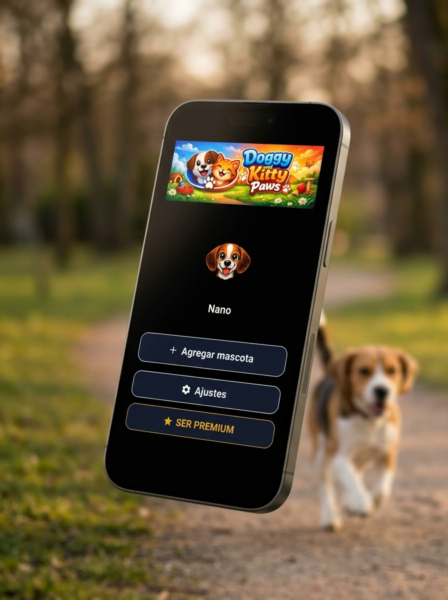
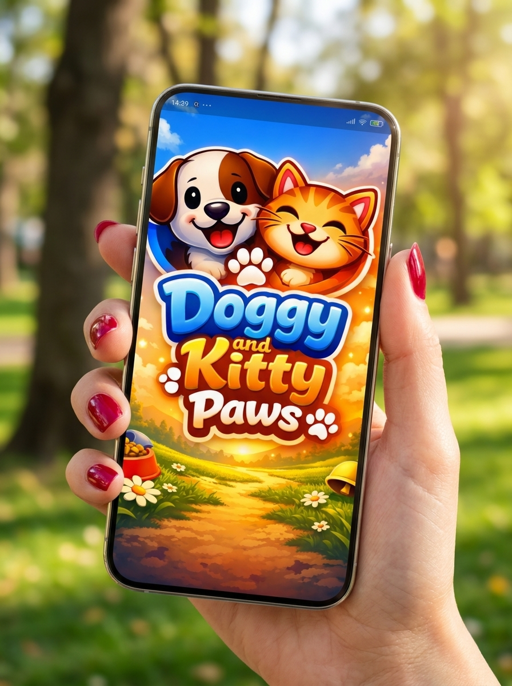
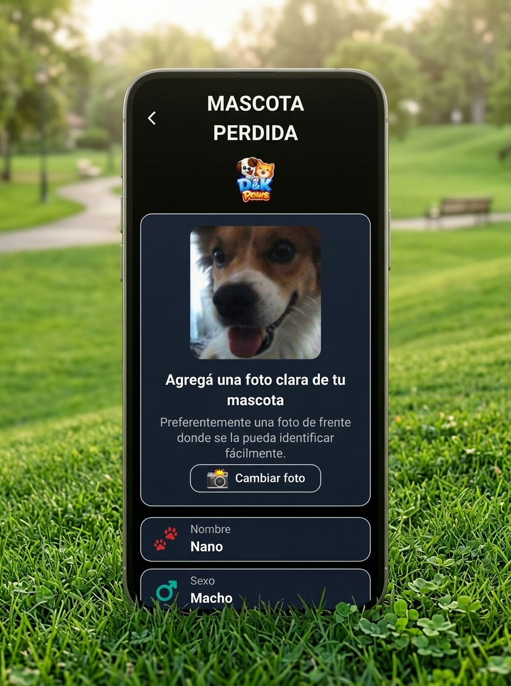

🐾 D&K Paws
La libreta digital de tus perros y gatos 🐶🐱



❤️ Toda la información de tus perros y gatos en un solo lugar.
Con D&K Paws, podés llevar un registro de tus compañeros peludos de forma sencilla, práctica y organizada.
🐕 Registrá a tus perros y gatos
Guardá sus datos y tené su información siempre a mano.
📸 Fotos de tus compañeros
Conservá imágenes para identificarlos y recordar sus mejores momentos.
📋 Su información organizada
Consultá los datos de cada mascota desde tu dispositivo.
🐾 Mascota Perdida
Si tu perro o tu gato se pierde, tenés la función Mascota Perdida: podés compartir información para ayudar a difundir su búsqueda y facilitar que pueda regresar a casa. ❤️🏡
🌎 Disponible en 4 idiomas
🇪🇸 Español · 🇬🇧 Inglés · 🇧🇷 Portugués · 🇫🇷 Francés
💚 Versión gratuita y Premium
Elegí la opción que mejor se adapte a vos y a tus compañeros.
🐾 Porque no son solamente mascotas, ¡son parte de la familia!
D&K Paws — Cuidarlos también es recordar cada detalle. ❤️🐶🐱
Próximamente en Google Play